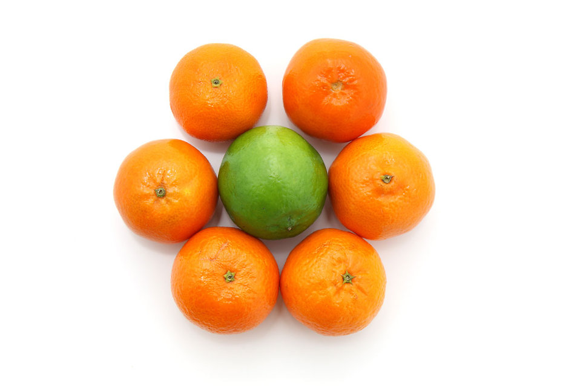

In Pirates of the Caribbean: Curse of the Black Pearl, the pirates were doomed to live forever undead, appearing like skeletons in the moonlight (Figure 1). A daytime version of this curse is scurvy or “the plague of the Sea” which has killed hundreds of sailors1. Scurvy is a terrifying disease with symptoms of “skin black as ink”, difficulty breathing, rigid limbs, and rotting gum tissue1. The horrible bad breath caused by scurvy was not the origin of sailor’s having filthy mouths, but supports the stereotype. The mental symptoms are also frightening. Our bodies have safeguards in place, like dams, to prevent us from feeling too much by limiting our senses2. Scurvy damages these sensory safeguards1. Furthermore, the afflicted sailors could not handle their exacerbated depression and homesick feelings, becoming devastated to the point of madness and suicide1. Since no one knew the origin of the disease, it was hard to diagnose and was easily mistaken for diseases like syphilis, leprosy and sometimes just plain old insanity1. Fortunately for sailors and explorers, vitamin C cures scurvy3.
Fruits and vegetables such as oranges, strawberries, watermelon, pineapple, green peppers, broccoli, and tomatoes are great sources of vitamin C4. So, to put a new twist on an old phrase, “When life hands you lemons…” at least you can prevent scurvy.
Why is vitamin C so essential to our health that? Vitamin C in its active form of ascorbic acid helps keep us healthy us by:
Vitamin C is a water soluble vitamin, which means you can easily absorb it from food, but you can’t store it so, you need to eat it every day6. The U.S. National Academy of Sciences Food and Nutrition Board determined that you only need about 10 mg of vitamin C per day to prevent deficiency (and scurvy)6. In other words, you could eat 1/10th of an orange and prevent scurvy. However, only eating this small amount of vitamin C is associated with health problems like high blood pressure, stroke, atherosclerosis, and some types of cancer6. The recommended dietary allowance (RDA) for vitamin C for adults is 90 mg for males and 75 mg for females which amounts to about an orange a day5.
A common misconception about vitamin C is that it can treat the common cold7. Nobel prize winner Linus Paul published a paper about preventing colds using vitamin C and several companies have taken advantage of his results and marketed vitamin C supplements to prevent or treat the common cold8. However, since his initial study, many other scientists have re-examined and tested his results7. Overall, the consensus among the scientific community today after many trials and data analysis is that vitamin C offers no benefits or protection against the common cold. These vitamin C supplements contain extreme amounts of vitamin C, beyond what your body can absorb. So, the extra vitamin C ends up in your urine, in sense, pouring the money spent on the supplements down the drain5. However, if you aren’t an average patient and are exposed to a lot of physical stress (professional athletes) or to extreme cold temperatures (living in subarctic environments), vitamin C intake may help to prevent the common cold for you7.
Vitamin C does help the immune system in other ways. It helps your body’s T cells develop into functional T cells to defend your body9. [T cells defend your body by killing infected cells and calling B cells to action. B cells kill infected cells using antibodies to identify pathogens and mark cells for death]. Basically, vitamin C acts like a drill sergeant that turns the T cells from trainees into soldiers, ready to do battle with the enemy. Vitamin C also works as a power booster by helping you to produce more immune cells. For example, natural killer cells reproduce more quickly when ascorbic acid is available which lets the NK cells kill virus infected cells and tumors more efficiently10. Vitamin C’s antioxidant properties also help prevent cells from dying during inflammation, limiting damage caused by fighting off an infection11. The take away message I have learned, after looking through the studies and research papers about vitamin C, is that it’s important to eat enough fruits and vegetables so to take in enough vitamin C to support your immune system. So, the old adage “An apple a day keeps the doctor away” certainly fits with an orange and scurvy… just not with the common cold (Figure 2)
 Figure 1: Apples and Oranges
[1] Lamb, J. BBC - History - British History in depth: Captain Cook and the Scourge of Scurvy. BBC (2011) at http://www.bbc.co.uk/history/british/empire_seapower/captaincook_scurvy_01.shtml
[2] von Bekesy, G. Similarities of inhibition in the different sense organs. Am. Psychol. 24, 707–719 (1969).
[3] BBC - History - Historic Figures: James Lind (1716 - 1794). BBC (2014) at http://www.bbc.co.uk/history/historic_figures/lind_james.shtml
[4] King, M. W. Vitamins: Critical Enzyme Co-Factors. The Medical Biochemistry Page (2015) at http://themedicalbiochemistrypage.org/vitamins.php
[5] Vitamin C. National Institutes of Health Office of Dietary Supplements (2013) at https://ods.od.nih.gov/factsheets/VitaminC-HealthProfessional/
[6] Economo, Christine and Clay, W. D. Food, Nutrition, and Agriculture: Nutritional and health benefits of citrus fruits. in Agriculture and Consumer Protection (Food and Agricultural Organization of United Nations, 1998). at http://www.fao.org/docrep/x2650t/x2650t03.htm
[7] Allan, G. M. & Arroll, B. Prevention and treatment of the common cold: making sense of the evidence. CMAJ 186, 190–9 (2014).
[8] Pauling, L. The significance of the evidence about ascorbic acid and the common cold. Proc. Natl. Acad. Sci. U. S. A. 68, 2678–81 (1971).
[9] Manning, J. et al. Vitamin C promotes maturation of T-cells. Antioxid. Redox Signal. 19, 2054–67 (2013).
[10] Huijskens, M. J. A. J. et al. Ascorbic acid promotes proliferation of natural killer cell populations in culture systems applicable for natural killer cell therapy. Cytotherapy 17, 613–20 (2015).
[11] Wintergerst, E. S., Maggini, S. & Hornig, D. H. Immune-enhancing role of vitamin C and zinc and effect on clinical conditions. Ann. Nutr. Metab. 50, 85–94 (2006).
{kind=link}